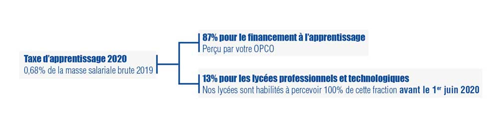
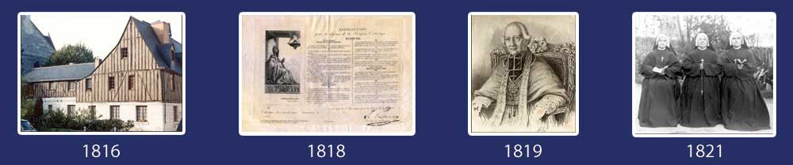

Au Sommaire :
> Portes Ouvertes reportées
> Taxe d'apprentissage
> Le Pôle orientation 3ème/2nde
> Un partenariat avec la Marine Nationale
> Un peu d'histoire...
Edito Benoît VISSE
J'ai le plaisir de vous envoyer le deuxième numéro de cette Info'News de l'Institution Notre-Dame La Riche au format électronique.
Ce numéro avait été préparé pour vous être envoyé courant mars, mais l'actualité a un peu bousculé le calendrier.
Les établissements de l'Institution sont fermés depuis le 16 mars aux élèves, collégiens, lycéens et étudiants, seuls sont accueillis les enfants des personnels de santé et des forces de police.
Néanmoins, nos enseignants et nos Directeurs des études de chaque établissement se sont mobilisés pour assurer une continuité des études et d'après nos échos, vous êtes nombreux à nous faire part de votre satisfaction.
Fin de semaine, ce sera pour quinze jours, le début des vacances de Pâques. Nos établissements seront fermés pendant cette période excepté pour les inscriptions et les contacts avec les familles, un accueil téléphonique est également maintenu, comme aujourd'hui, tous les matins (de 9h à 12h) pendant la période de confinement.
Au fur et à mesure des différents numéros, vous vous invitons à découvrir les “plus” de Notre-Dame la Riche, son histoire, ses ambitions...
Par exemple, dès la maternelle, les élèves bénéficient d'un apprentissage précoce de l'anglais avec des enseignants anglophones.
Le Pôle orientation 3ème/2nde est un autre exemple concret. C'est un dispositif que nous avons mis en place depuis de nombreuses années sous la responsabilité d'un directeur des études. Nous sommes un des seuls établissements en France à avoir mis en place ce pôle pour faciliter la difficile transition entre collège et lycée et bien préparer l'orientation à la sortie de la seconde.
Dans ce numéro, je vous invite également à découvrir en détail l'agence de voyage pédagogique qui permet aux étudiants du BTS Tourisme et du BTS Négociation et Digitalisation de la Relation Client de mettre en application l’enseignement théorique dispensé, ainsi que notre partenariat avec la Marine Nationale pour nos lycéens de la filière Hôtellerie et Restauration.
Vous trouverez également un article sur les nouvelles modalités de versement de la Taxe d'Apprentissage pour 2020 qui ont évolué en début d'année et comment vous pouvez la verser au lycée technologique et lycée professionnel Notre-Dame La Riche.
Enfin, cette Info'News se termine avec le deuxième épisode de l'histoire de notre Institution née en 1776.
Si cette Info 'News avait été envoyée comme prévu initialement, je vous aurais invité à venir nous rencontrer lors de nos portes ouvertes prévues initialement le samedi 21 mars.
Je pense que vous avez été nombreux à réserver cette date qui malheureusement, pour les raisons que nous connaissons tous, n'a pu être conservée.
Néanmoins, notre site web mis en ligne depuis le début de l'année, www.notredamelariche.fr est régulièrement mis à jour et vous permet d'être informé sur la totalité de nos filières.
Il vous permet également de nous contacter et de préinscrire vos enfants, collégiens, lycéens et étudiants à nos différentes formations, n'hésitez pas à le consulter et à l'utiliser.
A la fin de la semaine commenceront les vacances de Pâques et nous espérons tous que les conditions sanitaires nous permettront de reprendre normalement la continuité des formations à la fin de ces vacances.
Bonne lecture à toutes et tous, Bonne Santé, préservez-vous.
Au plaisir d'échanger, n'hésitez pas à nous faire part de vos remarques, avis ou suggestions...
Benoît VISSE
Directeur Coordinateur de l'Institution Notre-Dame La Riche
Portes Ouvertes Notre-Dame La Riche

Initialement prévues le samedi 21 mars de 9h30 à 13h, nous vous invitions à venir découvrir le vaste éventail des formations de la maternelle à l'enseignement supérieur
Des formations pour toutes les vocations :
• BAC Général
• CAP Equipier polyvalent du Commerce
• BAC Pro Métiers de l'accueil
• BAC Pro Métiers du Commerce et de la Vente (MCV - options A et B)
• BAC Pro Commercialisation & Services en restauration
• BAC Pro Gestion - Administration
• BAC Pro Cuisine
• BAC Pro Systèmes Numériques
• BAC Sciences et Technologies de l'Hôtellerie et de la Restauration (STHR)
• BAC Sciences et Technologies du Management et de la Gestion (STMG)
• BAC Sciences et Technologies Industrielles et du Développement Durable (STI2D)
• BTS Audiovisuel en alternance (Nouveau, apprentissage pour la rentrée 2020)
• BTS Assurance en alternance
• BTS Communication initial ou en alternance
• BTS Gestion de la PME en alternance
• BTS Management Commercial Opérationnel (MCO) initial ou en alternance
• BTS Management en Hôtellerie Restauration (MHR) initial ou en alternance (Options A, B, C)
• BTS Négociation et Digitalisation de la Relation Client (NDRC) initial ou en alternance
• BTS Services Informatiques aux Organisations (SIO) en alternance (Options A et B)
• BTS Tourisme initial ou en alternance
Inscriptions
Vous êtes intéressé pour vous ou l'un de vos enfants par une de nos formations ou un de nos établissements, préinscrivez-vous sur le formulaire dédié sur notredamelariche.fr
Pour les BTS, les inscriptions se font directement auprès de nos établissements, les formulaires d'inscription sont disponibles sur la page BTS de notredamelariche.fr.
Pendant la période de confinement, y compris pendant les vacances scolaires de Pâques, un accueil téléphonique est assuré tous les matins entre 9h et 12h.
L'envoi, la réception de dossier d'inscription et les contacts avec les familles sont également gérés pendant ce créneau horaire.
Vous souhaitez malgré tout visiter nos locaux, rencontrer nos enseignants... Nous espérons, si les conditions sanitaires le permettent, programmer de nouvelles Portes Ouvertes courant juin.
Du Changement pour la Taxe d'Appentissage 2020

Début février, après la parution de notre dernière Info'News, les modalités de la collecte de la taxe d'apprentissage ont quelque peu évolué et vont modifier les règles de versement des entreprises. Nous vous proposons ci-dessous quelques points d'éclaircissements pour faciliter votre démarche.
Nous avons conscience que le versement de la taxe d'apprentissage n'est certainement pas la première préoccupation des chefs d'entreprise dans cette période incertaine, mais, pour l'immédiat, le gouvernement n'a toujours pas indiqué de report de date pour le versement des 13% pour les lycées professionnels et technologiques. Et donc si aucun report de date n'est annoncé la date du 1er juin restera obligatoire pour le versement de ces 13% de la taxe d'apprentissage.
En 2020, les règles de calcul de la taxe d'apprentissage sont les mêmes, à savoir 0.68% de la Masse Salariale 2019. Ce qui change en 2020, c'est que cette somme est divisée en 2 parties et que c'est vous qui devez directement la répartir :
• 87% destinés au financement de l'apprentissage, anciennement appelé le quota d'apprentissage. Ces 87% doivent être versés directement à votre OPCO qui ont remplacé les OPCA.
• 13% destinés à la dépense libératoire effectuée par l'employeur ou l'entreprise, anciennement appelée hors quota. Ils doivent être versés directement aux établissements habilités. Ce sont ces 13% que vous pouvez verser à Notre-Dame La Riche pour son lycée professionnel et/ou lycée technologique avant le 1er juin 2020. Ainsi vous contribuerez à l'innovation constante de vos futurs collaborateurs, à la qualité des enseignements pédagogiques dispensés dans ces établissements et au développement de filières d'avenir (numérique, commerce, vente, hôtellerie, restauration...)
Pour connaître les modalités en détail, nous vous invitons à vous rendre dès aujourd'hui et au plus tard avant le 1er juin 2020, sur la page dédiée de notre site web : www.notredamelariche.fr/TA, vous y trouverez un formulaire à remplir directement en ligne ou un formulaire à télécharger ainsi que les coordonnées pour effectuer votre règlement par virement ou par chèque...
Pour mémoire, le versement des 13% est obligatoire pour toutes les entreprises puisque la Taxe d'Apprentissage est un impôt.
Dès réception des éléments (formulaire rempli en ligne ou formulaire papier et votre règlement), nous vous adresserons un reçu fiscal libératoire.
Une question ?
Pour toutes demandes, n'hésitez pas à contacter Caroline PLATTEAU, en charge de la Taxe d'Apprentissage à Notre-Dame La Riche au 06 22 58 07 56, par mail à caroline.platteau@indlr.fr ou par le formulaire de contact de notre site web : notredamelariche.fr/contact.html
Le Pôle orientation 3ème/2nde
Depuis quelques années, Notre-Dame La Riche est un des seuls lycées en France à avoir mis en place un Pôle Orientation Troisième/Seconde.
Les objectifs principaux de ce pôle sont :
- Faciliter le passage du collège au lycée
- Mieux gérer l'orientation des collégiens et lycéens
- Rapprocher les équipes enseignantes.
Pourquoi un tel dispositif ?
• La période du collège est très longue et les collégiens de 3ème nécessitent un regard particulier, leurs besoins éducatifs n'ayant que peu de points communs avec ceux de la 6ème.
• Auparavant, les enseignants se plaignaient souvent jusqu'en décembre du comportement et des méthodes de travail des secondes. “Ils se croient encore au collège”...
Ainsi, avec la création de ce Pôle, les troisièmes sont plus rassurés lors du difficile passage au lycée, le fait de rester dans les mêmes locaux facilite les rencontres et améliore la transition collège/lycée tant pour les collégiens que pour les enseignants.
La création de ce pôle depuis plusieurs années a également permis à des enseignants qui n'exerçaient qu'au collège de prendre en charge des secondes. La constitution d'une équipe éducative propre (Directeur des études, Responsable Vie Scolaire, Assistant d'éducation) facilite également la transition entre la troisième et la seconde, certaines exigences du lycée étant mises en place dès la troisième.
Ce Pôle 3ème/2nde présente également des avantages pour l'orientation des élèves sur les deux années et facilite la transition avec le cycle première terminal.
Si votre enfant est déjà en troisième dans un autre établissement, il peut rejoindre le Pôle orientation 3ème/2nde Notre-Dame La Riche pour la seconde uniquement. Avec le recul, même s'il ne bénéficiera pas totalement du dispositif, l'expérience nous a montré que les lycéens s'intègrent très rapidement, ils pourront bénéficier en outre d'une diversité d'options, 10 au total (Théâtre, section sportive, section européenne, latin, grec...).
Pour préinscrire votre enfant, rendez-vous sur la page préinscription de notredamelariche.fr.
Un partenariat avec la Marine Nationale
La Marine Nationale développe des partenariats avec des lycées. C'est dans ce cadre qu'un partenariat existe avec le lycée technologique Notre-Dame La Riche pour les lycéens de seconde, première et terminale de la filière STHR (Sciences et Technologies de l'Hôtellerie et de la Restauration).
Au cours des trois années de formation, le jeune qui s'inscrit dans ce partenariat découvrira progressivement les exigences, les perspectives et les conditions de vie d'un personnel d'hôtellerie-restauration embarqué.
Il s'agit, en seconde, de découvrir les métiers proposés par la Marine Nationale à l'issue du baccalauréat ou du BTS. En tout début de formation, une visite de trois jours à l'arsenal de Brest est proposée. Pour les jeunes qui poursuivent le parcours en première, un stage technique est mis en œuvre en fin d’année. Enfin, c'est en classe de terminale qu'il peut être proposé à l'élève un stage de 4 semaines embarqué à bord d'un navire militaire.
L'engagement dans le parcours est à renouveler chaque année, l'inscription quant à elle s'effectue en premier lieu auprès de l’École Hôtelière Notre-Dame La Riche, mais doit être doublée par une démarche auprès du CIRFA de Tours. C'est ainsi naturellement qu’un représentant de la Marine Nationale assistera aux conseils de classe des jeunes concernés. A l'issue du parcours, certains jeunes se verront proposer un contrat d'engagement dans la Marine Nationale qu'ils pourront accepter ou refuser.
Pour en savoir plus sur la filière STHR , rendez-vous sur notredamelariche.fr, onglet BAC TECHNO
L'histoire de l'institution Notre-Dame La Riche de 1816 à 1821

Au fil de nos “Info'News”, nous allons vous faire vivre l'histoire riche de l'Institution Notre-Dame La Riche. Deuxième épisode !
1816 : L’Abbé Guespin installe l’école des filles, née sous le Consulat et l'Empire, dans l’ancienne auberge du Saint-Esprit au chevet de l’église et dans l’ancien vicariat de la maison de la Messe de Onze heures, place La Riche.
(photo : L'Auberge de St Esprit)
1818 : Pendant ce temps, l’école de garçons Notre-Dame La Riche fonctionne toujours sous la forme d’une école de charité. En février 1818, elle doit être fermée en raison du décès du maître d’école, Monsieur Renard. "L’Association pour la Défense de la Religion Chrétienne" animée par M. Cartier dont le frère prêtre était un ancien député des Etats Généraux et ami de Jean-François Guespin, relance l'école.
(photo : Statuts de l'Association)
1819 : L'association décide, en accord avec le Curé de la Paroisse Notre-Dame La Riche, de faire appel aux Frères des Ecoles Chrétiennes. Mais les Frères manquent de recrues ; ils acceptent de former des novices, mais la Paroisse doit les recruter et financer leurs études. Dès mars 1818, deux novices, "les sieurs Soclet et Martin sont envoyés à Paris pour être formés d’ici Pâques 1819".
Pendant ce temps, l’Abbé Guespin rachète la maison de l’ancienne chapelle Saint-Médard pour les Frères. Le Frère Eloi vient visiter les lieux et donne son accord sous réserve de travaux d’aménagement.... Mais, il faut vite déchanter : les candidats sont renvoyés du Noviciat quelques mois plus tard. Le 3 février 1819, l’Association envoie mille huit cents francs à Lyon pour payer le noviciat de trois jeunes nouvelles recrues. Finalement Frère Gerbaud envoie en septembre 1819 trois Frères mais...de Nantes.
On n’y croyait plus, selon les dires de Monseigneur de Montblanc, qui écrit à M. Cartier le 15 avril 1819 : "Je ne suis point étonné des sacrifices que fait Monsieur le Curé de La-Riche et des peines qu’il se donne pour l’établissement des Frères des Ecoles Chrétiennes. Le ciel bénira ses efforts ainsi que la persévérance à faire le bien dans sa paroisse malgré tous les obstacles qu’il rencontre. Je crains qu’on soit obligé d’attendre longtemps les trois Frères qu’on lui promet...".
(photo : Mgr De Montblanc)
1820 : La persévérance de Jean-François Guespin assure le succès. Les trois Frères arrivent pour la rentrée scolaire d’octobre 1819 et sont installés solennellement par Monseigneur l’Archevêque le 31 janvier 1820.
A la fin de l’année 1820, Nicolas Simon, curé de la Paroisse Saint-Martin de l’église métropolitaine installe une nouvelle école auprès de la cathédrale, la future école Saint-Gatien. Les six Frères enseignants, le Frère serveur et le Directeur, Frère Alexis vivent dans les bâtiments de l’ancien prieuré Saint-Médard auprès de l’église Notre-Dame La Riche.
Quelques années plus tard, une troisième école est ouverte au centre ville près de l’église Saint-Saturnin. L’Ecole Notre-Dame La-Riche devient ainsi le centre des écoles des Frères des Ecoles Chrétiennes de Tours.
La vocation première de celle de Notre-Dame La Riche est d’être une école paroissiale consacrée à l’enseignement primaire des garçons. Les nouveaux maîtres vont la modeler, l’organiser, la gouverner : ils lui donnent un esprit. Sa relative stabilité, pendant plus d’un siècle, lui fait acquérir une base sociale et une forte réputation.
1821 : De l’autre côté de la Place La-Riche, se développe le Pensionnat du Saint-Esprit. En 1821, Mademoiselle Puech et Mademoiselle Bourguignon se séparent des Filles de Marie pour fonder une nouvelle congrégation portant le voile et l’habit religieux : la Congrégation des Religieuses des Sacrés-Cœurs de Jésus et de Marie.
(photo : Religieuses du Saint-Esprit)
Ne manquez pas notre prochaine newsletter, vous y retrouverez l'histoire de l'institution de Notre-Dame la Riche à partir de 1823.
Pour voir notre premier épisode (1776 - 1804), rendez-vous sur notre numéro précédent
Une remarque, une question ou pour nous contacter :
Institution Notre-Dame La Riche | 26 rue de la Bourde, 37000 TOURS
Tél. 02 47 36 32 00
| ndlr@ndlr.fr
| www.notredamelariche.fr
Pendant la période de confinement y compris les vacances scolaires, un accueil téléphonique est assuré tous les matins de 9h à 12h.
L'envoi, la réception de dossier d'inscription et les contacts avec les familles sont également gérés pendant ce créneau horaire.
Suivez nos actualités sur :


|